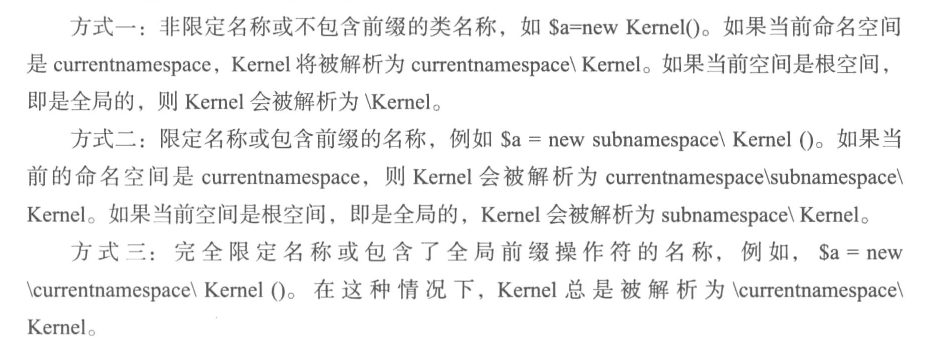
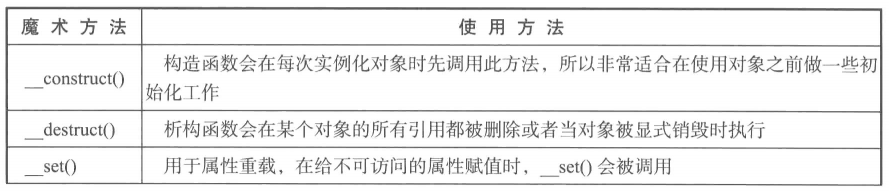
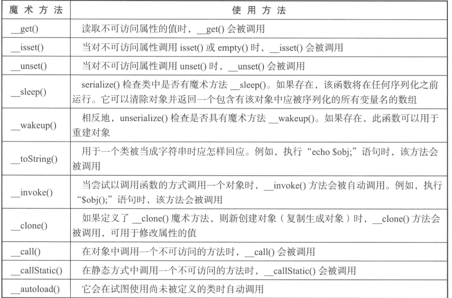
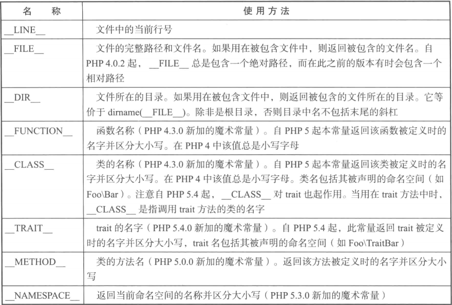
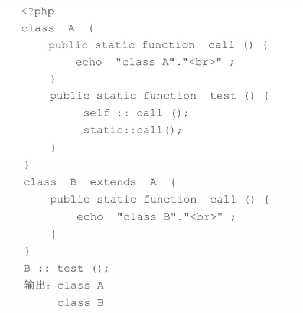

laravel框架学习之需要了解的php基础
0 条评论总是有人说，php基础好才能够学习laravel，那么我们需要知道php哪些基础呢？我罗列了下，大概有以下几种：
- 熟悉面向对象编程的
- 熟悉面向接口编程的
- 知匿名函数
- 熟悉反射
- 命名空间
- 设计模式
- composer
- PSR 规范
接下来，划重点般介绍下这些基础
命名空间
命名空间的作用
- 解决命名冲突
- 为组件化提供可能，通过命名空间来组织文件，使得组件的文件路径与命名空间具有一定关系，最终通过命名空间找到相应的文件
命名空间的使用规则

文件包含
include和require，两者作用几乎一样，只是处理脚本方式不同，require在出错时产生E_COMPILE_EROR级别的错误，会导致脚本运行中止，include会产生E_WARNING级别的错误，只会发出警告，脚本继续运行。
类的自动加载
魔术方法__autoload(string $class)
函数spl_autoload_register 注册给定的函数作为__autoload的实现
匿名函数
匿名函数的存在既可以作为参数传给函数，也可以作为变量赋值，进而控制函数的执行过程
1 | $array = array(1,2,3,4); |
使用外部变量
1 | function getCounter(){ |
php魔术方法
魔术方法通常椒在特定的时机被PHP系统自动调用，可以通俗地理解为系统事件监听方法，在事件发生时才出发执行，与嵌入式系统中的中断函数类似，通常以__打头的方法都作为魔术方法
常用的魔术方法


php魔术常量

反射机制
反射机制主要用来动态地获取系统中类，实例对象，方法等语言构件的信息，通过反射API函数可以实现对这些语言构建信息的动态获取和动态操作等
具体可参考php反射机制
后期静态绑定
使用关键字static来实现，通过这种机制，static::不再被解析为定义当前方法所在的类，而是实际运行时计算得到的，即为运行时最初调用的类，可类比js中的this的使用。

trait
弥补了单继承的缺点，很简洁的实现代码复用
用法：通过在类中使用use 关键字，声明要组合的Trait名称，具体的Trait的声明使用Trait关键词，Trait不能实例化
Trait中的方法或属性会覆盖 基类中的同名的方法或属性，而本类会覆盖Trait中同名的属性或方法
具体可参考如何使用Trait?